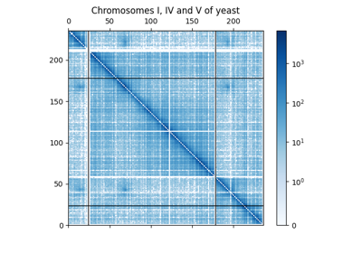
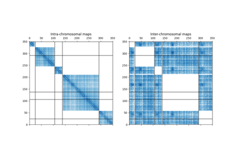

Home
Installation
Documentation
Tutorials
Gallery
Utils
¶
Examples concerning the
iced.utils
module.

Extracting parts of a contact map
Extracting parts of a contact map

Extracting parts of a contact map
Extracting parts of a contact map